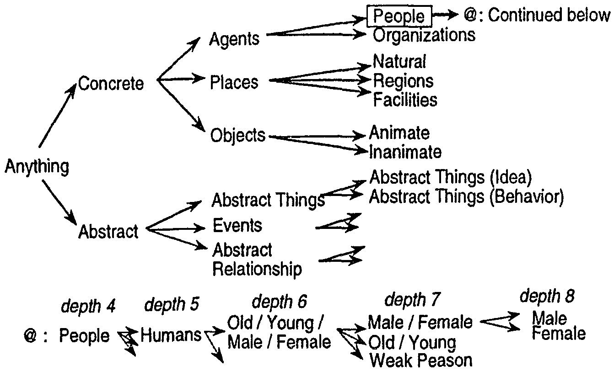
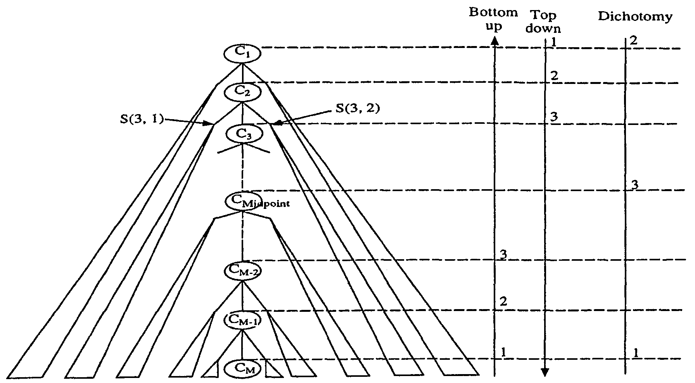
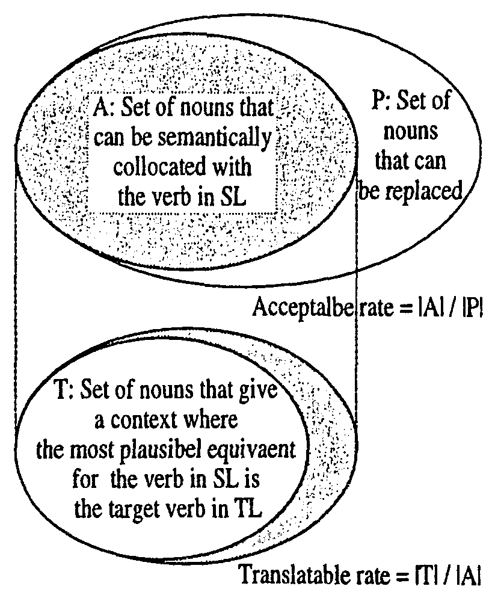

This paper addresses the issue of acquiring translation rules for machine translation (MT) systems that adopt a transfer approach. These rules are semantic pattern pairs (SPPs) of source and target languages. Practical MT systems must additionally contain a huge number of SPPs corresponding to rarely-used predicates and predicate usages. Such SPPs are difficult to automatically acquire with corpus-based methods [1,2,10,11]. To solve this difficulty, this paper proposes a method to acquire SPPs by using queries based on a semantic hierarchy. The proposed method asks the lexicographer for the necessary information in order to generalize the conditions of SPPs and then gradually generalizes these conditions. Experimental results show that the proposed method allows the acquisition of more plausible conditions within almost the same time spent for manual generalization.
The World Wide Web (WWW) has become very popular throughout the world. Due to this popularity, more and more people have come to realize that the opportunity is growing for them to read documents written in unfamiliar languages. Accordingly, there are higher hopes for more efficient machine translation (MT) systems.
One attempt to achieve MT systems is the use of a semantic-based transfer approach [6,4,12]. This approach focuses on the collocation between verbs and nouns. Semantic-based transfer MT systems provide if-then rules (called semantic pattern pairs or SPPs), whose if-parts and then-parts are collocation patterns in the source language (SL) and the target language (TL), respectively.
Figure 1 shows a simplified example [5] of an SPP in a Japanese-English MT system, ALT-J/E [6]. The if-part is a Japanese pattern, and the then-part is an English equivalent. This SPP indicates that if the Japanese verb is yaku, its subjective noun is categorized as People and its objective noun is categorized as Bread or Confectionery; accordingly, the corresponding English verb is bake and its subject and object are the translation into English of the Japanese subject and object, respectively. Each slot such as J-SUBJ or J-OBJ contains the meanings of nouns (semantic categories) like People, Bread, or Confectionery1.
|
ALT-J/E has about 2,800 semantic categories [5], which constitute a hierarchy with a maximum depth of 12 (Figure 2). Each of about 400,000 nouns in the ALT-J/E lexicon has one or more semantic categories as its meanings.
Practical MT systems based on a semantic-based transfer approach must additionally contain a huge number of SPPs corresponding to rarely-used predicates and predicate usages. In the case of ALT-J/E, Shiral et al. [9] reported that about 10,000 SPPs, corresponding to rarely-used predicates and predicate usages, have to be generated for ALT-J/E to cover nearly all of the predicates in Japanese.
The existing approaches to acquire SPPs include corpus-based approaches [1,2,10,11]. As Church indicates in [3], many possible co-occurrences cannot be observed even in a very large corpus. That is, a sufficient number of illustrative sentences cannot be prepared for the above kinds of SPPs. These approaches are, therefore, of limited applicability.
|
 |
To date, the above kinds of SPPs have been acquired by manual approaches like those in [9]. The task of generating SPPs involves inputting the appropriate (not over-general and not over-specific) semantic categories into each slot. It is, however, difficult for lexicographers to manually generate SPPs due to the following reasons.
To overcome the difficulty of generating SPPs and the sheer quantity of SPPs, methods to support lexicographers are required.
This paper proposes a new method that searches for appropriate semantic categories to be inputted into each slot by using queries based on a semantic hierarchy. The proposed method adopts three different approaches to searching for appropriate semantic categories. The approaches for the searching generate translation examples at each search point and ask whether the noun corresponding to the target slot can be semantically collocated with the verb of the SL side in the acquired SPP and whether that noun can also give a context where the most plausible equivalent for the verb of the SL side is the verb of the TL side. The only task that lexicographers have to do is to answer each query. Consequently, the resulting categories follow a specific generalization standard.
The authors experimentally evaluated the proposed method by acquiring the semantic categories for ten SPPs [5] with ALT-J/E. Experimental resuIts showed that the proposed method was able to acquire, in five cases, the same categories as, or in the other cases, more plausible categories than, those specified manually within almost the same time spent for the manual generalization.
The next section describes the acquisition task in this study. The proposed method is presented in Section 3. Experimental results are shown and a discussion is provided in Section 4. Finally, our conclusions are presented in Section 5.
This section characterizes the appropriate semantic categories that the proposed method should input into each slot in SPPs and describes the acquisition task that the proposed method handles.
Let us assume that lexicographers attempt to acquire the appropriate semantic categories for the slots of the SPP shown in Figure 1 while they derive (1) as a sample sentence that meets the conditions of the acquired SPP.
| (1) | Taro-ga | ppurupai-wo | yaku | |||
| taro-SUBJ | apple pies-OBJ | bake-PRESENT | ||||
| 'Taro bakes apple pies' | ||||||
where the nouns such as Taro "a typical first name of Japanese males" for the J-SUBJ slot or appurupai "apple pies" for the J-OBJ slot are called the sample nouns, and the semantic categories of the sample nouns are called the sample categories. Let the sample categories of Taro and appurupai be Male and Confectionery, respectively.
When specifying different semantic categories from sample categories into slots so that we can investigate what kinds of linguistic phenomena can be observed, let us replace one ofthe sample nouns with another noun as follows.
| (2) | Meari-ga | appurupai-wo | yaku | |||
| mary-SUBJ | apple pies-OBJ | bake-PRESENT | ||||
| 'Mary bakes apple pies' | ||||||
| (3) | Mangetsu-ga | appurupai-wo | yaku | |||
| a foll moon-SUBJ | apple pies-OBJ | bake-PRBSENT | ||||
| 'A full moon bakes apple pies' | ||||||
| (4) | Taro-ga | sake-wo | yaku | |||
| taro-SUBJ | a salmon-OBJ | grill-PRESENT | ||||
| 'Taro grills a salmon' | ||||||
In the case of (2), the sentence is natural as a Japanese sentence, so the substituted noun Meari "Mary" can be semantically collocated with Yaku "bake". In the case of (3), the description of the sentence Mangetsu-ga appurupai-wo yaku is not realistic and cannot happen normally. In such a sense, Mangetsu "a full moon" cannot be semantically collocated with yaku. In the case of (4), the sentence is natural as a Japanese sentence so the substituted noun sake "a salmon" can be semantically collocated with Yaku. On the other hand, the most plausible equivalent for Japanese verb yaku is grill rather than bake. This is because, although the source sentence does not describe definite clues in order to select the English equivalent, the most plausible situation of the source is Taro grills a salmon as long as one takes account of the culture of SL; in this case, Japanese culture.
As seen above, the following linguistic phenomena can be observed through the replacement of nouns,
| (P1) | Some nouns (or semantic categories) can be semantically collocated with the verb of the SL side in the acquired SPP. | |
| (P2) | Out of all of the semantically collocated nouns (or semantic categories), some nouns (or semantic categories) can give a context where the most plausible equivalent for the verb of the SL side is the target verb of the TL side. |
The phenomena is a good indicator for finding the appropriate categories.
As a semantic category specified to a slot processed by lexicographers (the target slot) can change from the sample category for the target slot to the root of the semantic hierarchy step by step, the number of nouns able to meet an acquired SPP can increase gradually. When Ci denotes the i-th semantic category on the path from the root of the semantic hierarchy to the sample category for the target slot (Figure 3), and when Ci is specified to the target slot instead of Ci+1, the ratio of the collocated nouns in (P1), to the additionally covered nouns, is called the acceptable rate of Ci , which is related to the occurrence probabilities of the SL sentences generated by the replacement. The ratio of the nouns that can give the context in (P2), to all collocated nouns in (P1), is called the translatable rate of Ci (Figure 4), which is related to the probabilities that such substituted nouns can give the context in (P2). Because both rates of the appropriate semantic categories specified to the target slot should be sufficiently large, let us focus on the lower thresholds of both rates and call them the minimal acceptable rate and the minimal translatable rate, respectively. A semantic category whose acceptable rate is the minimal acceptable rate or greater and whose translatable rate is the minimal translatable rate or greater is called an ok-category. On the other hand, a category that is not an ok-category is called an ng-category.
|
 |
|
 |
This paper characterizes each appropriate semantic category as an ok-category that is located at the highest level on the semantic hierarchy when the minimal acceptable rate and the minimal translatable rate are given.
Consequently, given the minimal acceptable rate and the minimal translatable rate, the acquisition task that the proposed method handles is to search for the highest ok-category for the target slot of the SPP acquired by the method (Figure 5).
| |||||||||||||
For example, to make the proposed method acquire the appropriate semantic category for the J-SUBJ slot of the SPP shown in Figure 1, the inputted skeleton of the sentence that meets the acquired SPP is N1-ga N2-wo yaku "N1 bake N2", where Ni is a variable. Taro and Male are inputted as the sample noun for the J-SUBJ slot and the semantic category, respectively. At the same time, appurupai and Confectionery are inputted as the sample noun for the J-OBJ slot and the semantic category, respectively. Lexicographers can easily input this information. The output is the highest ok-category in the eight semantic categories on the path between the root in Figure 2, Anything (C1), and the leaf, Male (C8).
This section describes the proposed method that adopts three approaches to search for the highest ok-category described in Section 2. The approaches use the same strategy for generating queries and presenting them to lexicographers in order to estimate the acceptable rate and the translatable rate of the current search point.
When the current search point is Ci , the approaches for the searching generate sentences in the following way: (i) initially generate a sentence by filling each variable Ni in the skeleton with the corresponding sample noun; (ii) then, generate some sentences by replacing the sample noun for the target slot with other nouns in Clusteri , which hereafter denotes the set of nouns categorized as Ci or descendants of Ci but not categorized as Ci+i or descendants of Ci+1. For example, assume that, in order to acquire the SPP shown in Figure 1, the input to the proposed method is the same as presented at the end of Section 2: N1-ga N2-wo yaku as the skeleton, Taro and appurupai as the sample nouns, and Male and Confectionery as the semantic categories; that the target slot is the J-SUBJ one; and that the current search point is C2 (concrete in Figure 2), then the substituted nouns are categorized as either Palaces or Object or descendants of them.
The approaches use the generated sentences for estimating the acceptable rate and the translatable rate of the current search point Ci. The main issues are that, in order to estimate both rates within significantly small errors by using only the limited number of generated sentences, how do the approaches select the nouns substituted for the sample noun and how do the approaches estimate both rates.
To resolve the two issues, the approaches employ stratified sampling [8], a sampling survey technique in statistics, in the following. Clusteri is separated into subsets of nouns, from which some substituted nouns are collected, where the number of substituted nouns from each subset is decided according to the total number of nouns in the subset as will be seen later. Then, the acceptable rate of Ci is estimated as the weighted average of the acceptable rates for the subsets, where the weight for each subset is the number of substituted nouns. For example, assume that Ci is separated into two subsets, that the ratio of the substituted nouns for the subsets is 3:1, and that the acceptable rates for the subsets are 100% and 50%, respectively. Then, the acceptable rate of Ci is estimated as (100*3+50*1)/ (3+1). The translatable rate of Ci is also estimated in the same way.
Stratified sampling does not provide a way to separate Clusteri the proposed method, therefore, adopts an original technique separating Clusteri into subsets, which is decided step by step as follows. For example, when the total number of substituted nouns in Cluster2 is 40 under the same input as seen at the beginning of this section, at first, allocate the number of substituted nouns (the sample size) in Cluster2 among all of the siblings of C3 (Agents in Figure 2) according to the ratio of the number2 of leave that are descendants of each sibling of C3, for example, 3:1. In this example, the sample sizes for Palaces and Object become 30 and 10, respectively. For each sibling, allocate the sample size of the sibling among all of the children in the same way, until the sample size is too small, for example, equal to or less than 15. If the ratio of the number of leaf-level descendants of Natural, Regions and Facilities is 2:1:3, then the sample sizes3 for Natural, Regions, and Facilities become 10, 5, and 15. Since the sample size of Object is less than 15, the sample size of Object is not allocated among the children: Animate and Inanimate. After this, for each child, allocate the sample size of the child among all of the children of the child recursively, until the sample size is too small. Let S (i,i ), (1 <= j <= Li ), hereafter, denote the semantic categories whose sample sizes are not allocated to their children. In the example, L2 = 4 and S (2, j ) (1 <= j <= L2) correspond to Natural, Regions, Facilities, and Object.
S (i, j ), (1 <= j <= Li ) are used as the subsets used by the stratified sampling. The substituted nouns are selected from S (i, j ) or descendants of S (i, j ) in the order of frequency in use. The number of selected nouns is the sample size for S (i, j ).
For each S (i, j ), (1 <= j <= Li ), the approaches for searching simultaneously present the generated sentences to lexicographers. This simultaneous presentation prevents the lexicographers from misunderstanding the meanings of the substituted nouns. Since all of the substituted nouns in the presented sentences are categorized in a certain semantic category, the lexicographers can easily guess the correct meaning of a substituted noun.
The lexicographers judge whether each substituted noun can be semantically collocated with the verb of the SL side in the acquired SPP (Q1). If and only if this answer is positive, they also judge whether the substituted noun can give a context where the most plausible equivalent for the verb of the SL side is the verb of the TL side (Q2). The lexicographers make their determinations by answering queries: (Q1) and (Q2). For example, as explained in detail in Section 2, they answer positive to both (Q1) and (Q2) for (2) and negative to (Q1) for (3). Moreover, they answer positive to (Q1) and negative to (Q2) for (4).
The three approaches for searching differ in the order in which they search for an appropriate semantic category (Figure 3). The first two approaches, the Bottom-up approach and the Top-down approach, are the same as a linear search. The last approach, the Dichotomy approach, is the same as a binary search. For convenience in the following explanation, let us define that LM = 1 and S (M,1) = CM.
The Bottom-up approach applies the above query strategy to each semantic category in reverse order of depth, CM , CM-1, ... . When an ng-category is found, this approach stops searching and outputs the latest ok-category.
The Top-down approach applies the above query strategy to each semantic category in order of depth, C1, C2, ... . When an ok-category is found, this approach stops searching and outputs that ok-category.
The Dichotomy approach initially applies the above query strategy to the leaf and the root in order. Next, this approach prepares a candidate list, (C1, C2, ... , Ci , ... , CM ) and applies the above query strategy to the semantic category in the middle of the candidate list or to the lower semantic category closest to the middle if a precisely central semantic category does not exist. According to whether the semantic category is an ok-category or not, the approach revises the candidate list in the same way as a binary search does. Then the above procedure by using the updated candidate list is repeated. Consequently, the first and last elements of the candidate list are always an ng-category and an ok-category, respectively, after the root and leaf semantic categories are processed. When the length of the candidate list becomes 2, the approach stops searching and outputs the last element.
As mentioned above, the only task that lexicographers have to do is to answer each query. Consequently, the resuIting categories follow a specific generalization standard. After repeatedly applying one of the approaches for searching to each corresponding input, the proposed method can specify all of the appropriate semantic categories for each slot in the SPP.
The authors evaluated the proposed method on the three following points.
In order to evaluate the above points, the authors attempted to acquire semantic categories for SPPs whose if-parts corresponded to the skeletons in Table 1. The sample nouns inputted to the proposed method are shown under the skeletons. The target of the generalization is indicated by underline. The semantic hierarchy used was that of ALT-J/E as shown in Figure 2. The minimal acceptable rate and the minimal transIatable rate were fixed at 2% and 80%, respectively. The sample size for Ci and the lower threshold of the sample sizes were 50 and l0, respectively.
| No | Skeleton Sample Sentence |
Category specified manually |
| 1 | N1-ga N2-wo yomu "N1 read N2" Chichi-ga hon-wo yomu "My father reads a book" |
Agents |
| 2 | N1-ga N2-wo yomu "N1 read N2" Chichi-ga hon-wo yomu "My father reads a book" | Abstract Thing (Idea) |
| 3 | N1-ga N2-wo yomu "N1 read N2" Chichi-ga houkokusho-wo yomu "My father reads a report" | Spirit/Soul/Mind |
| 4 | N1-ga N2-wo N3-ni erabu "N1 elect N2 N3" Juhmin-ga kare-wo kaichou-ni erabu "Residents elect him their head" | Chief/President/Manager |
| 5 | N1-ga N2-de nyushou-suru "N1 win a prize in N2" Kare-ga Konkuhru-de nyushou-suru "He wins a prize in the contest" | Abstract Thing (Behavior) |
| 6 | N1-ga N2-wo tatamu "N1 close N2" Chichi-ga mise-wo tatamu "My father closes his shop" | Facilities |
| 7 | N1-ga N2-wo unten-suru "N1 run N2" Chichi-ga hatsudouki-wo unten-suru "My father runs an electric dynamo" | Machinery |
| 8 | N1-ga N2-wo nageru "N1 throw N2" Chichi-ga bohru-wo nageru "My father throws a ball" | Objects |
| 9 | N1-ga hanpatsu-suru "N1 rebound" Kabusiki-ga hanpatsu-suru "Shares rebound" | Economic system |
| 10 | N1-ga N2-ni tassuru "N1 rise to N2" Doru-ga saitakane-ni tassuru "The dollar rises to the highest level" | Price/Cost |
Two lexicographers, who generated SPPs of ALT-J/E, participated in the experiments. Each semantic category in the 3rd column indicates a semantic category specified manually for the SPP corresponding to the skeleton in the 2nd column.
| No | Difference | # of paired Queries | Time (M.) | ||||||
| B | T | D | B | T | D | B | T | D | |
| 1 | 0 | 0 | 0 | 259 | 53 | 53 | 23 | 6 | 5 |
| 2 | 0 | 0 | 0 | 158 | 155 | 155 | 17 | 16 | 18 |
| 3 | -1 | +3 | +3 | 119 | 51 | 51 | 24 | 10 | 5 |
| 4 | 0 | 0 | 0 | 55 | 262 | 158 | 9 | 34 | 15 |
| 5 | -2 | -2 | -2 | 153 | 259 | 204 | 8 | 21 | 11 |
| 6 | -1 | -1 | -1 | 147 | 208 | 157 | 10 | 13 | 12 |
| 7 | -1 | -1 | -1 | 104 | 310 | 208 | 10 | 54 | 8 |
| 8 | -2 | -2 | -2 | 208 | 207 | 156 | 55 | 75 | 13 |
| 9 | 0 | 0 | 0 | 158 | 212 | 160 | 7 | 12 | 8 |
| 10 | 0 | 0 | 0 | 50 | 316 | 155 | 16 | 4 | 10 |
| Ave. | -- | -- | -- | 141.1 | 203.3 | 145.7 | 17.9 | 24.5 | 10.5 |
Table 2 reports experimental results. The 2nd to 4th columns show the relative position of an acquired semantic category in comparison to a semantic category manually specified. For example, +1 or -1 indicates that the acquired semantic category is one semantic category above the semantic category manually specified or below it, respectively. Each number in the 5th to 7th columns shows the number of paired queries, i.e., (Q1) and (Q2) in Section 3.2, presented to the lexicographers. Each number in the 8th to 10th columns shows the time spent for generalization of the sample noun to the target slot. B, T, and D on the 2nd line indicate that the approach for the searching is, Bottom-up, Top-down, and Dichotomy, respectively. Through this experiment, the following things could be found:
This paper proposed a method to acquire appropriate semantic categories to be inputted into each slot of an SPP by using queries based on a semantic hierarchy. The queries ask whether the noun corresponding to the target slot in presented sentences can be semantically collocated with the verb in SL and ask whether the noun can also give a context where the most plausible equivalent for the verb in SL is the verb of the TL side in the acquired SPP.
The method allows lexicographers to acquire more plausibIe semantic categories for SPPs by simply answering the queries presented by the method.